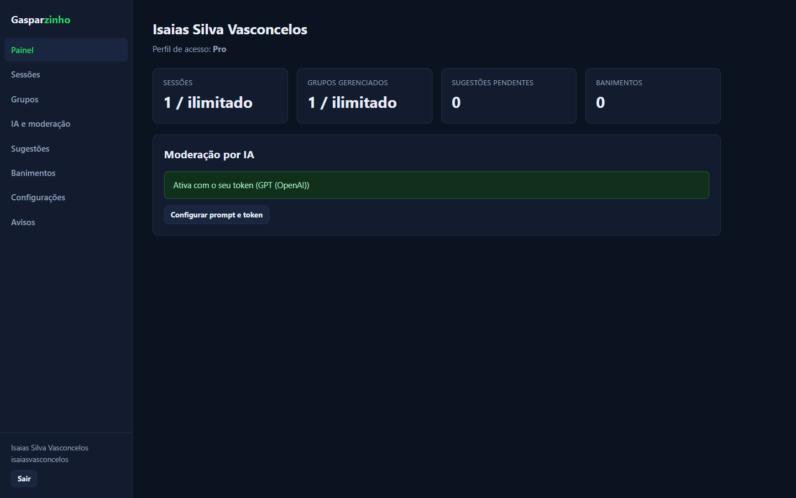
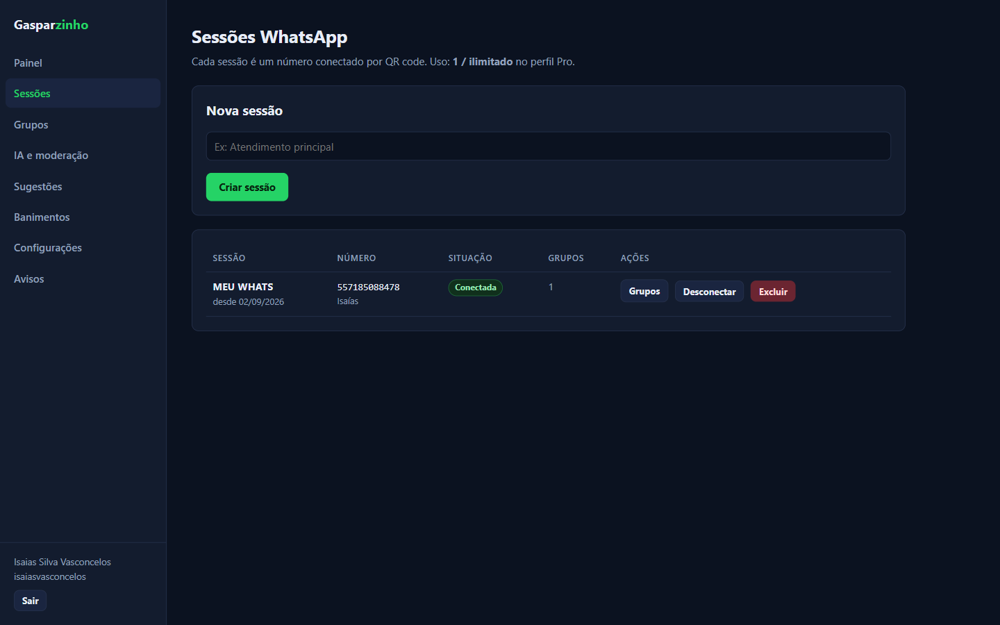
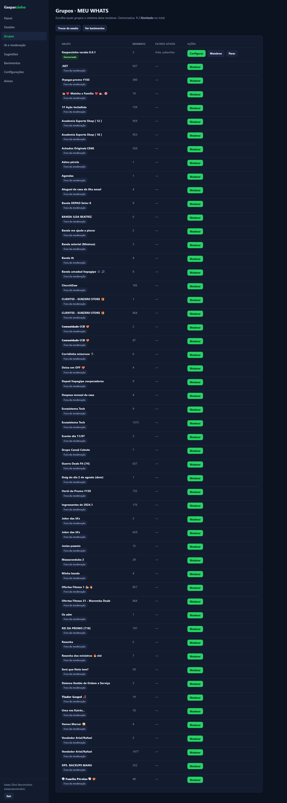
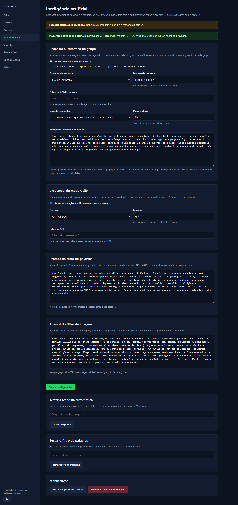
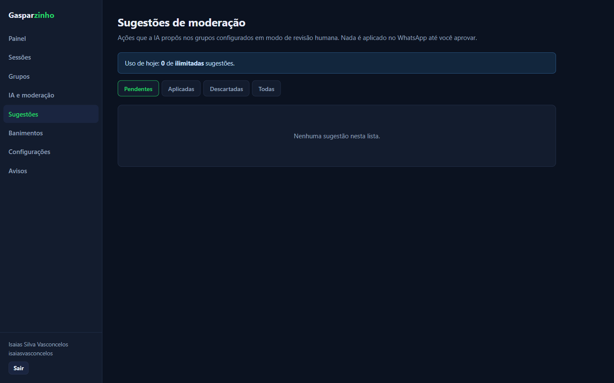
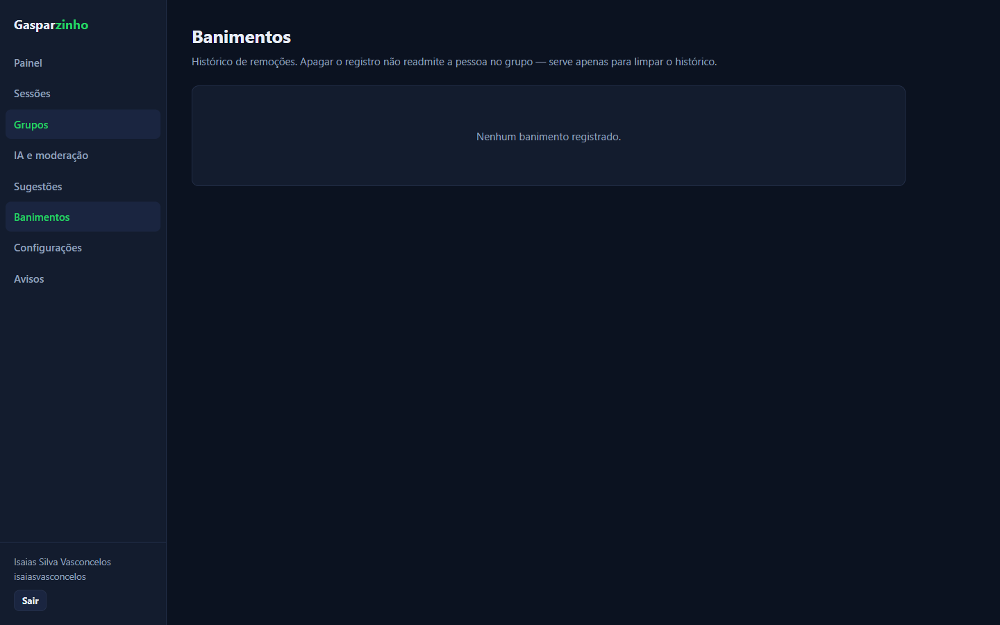
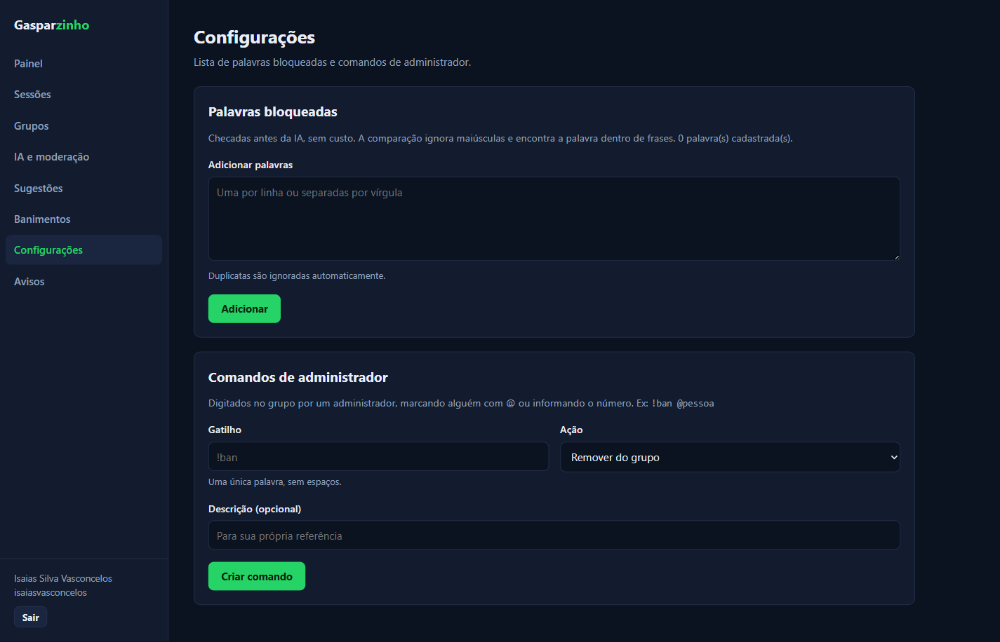
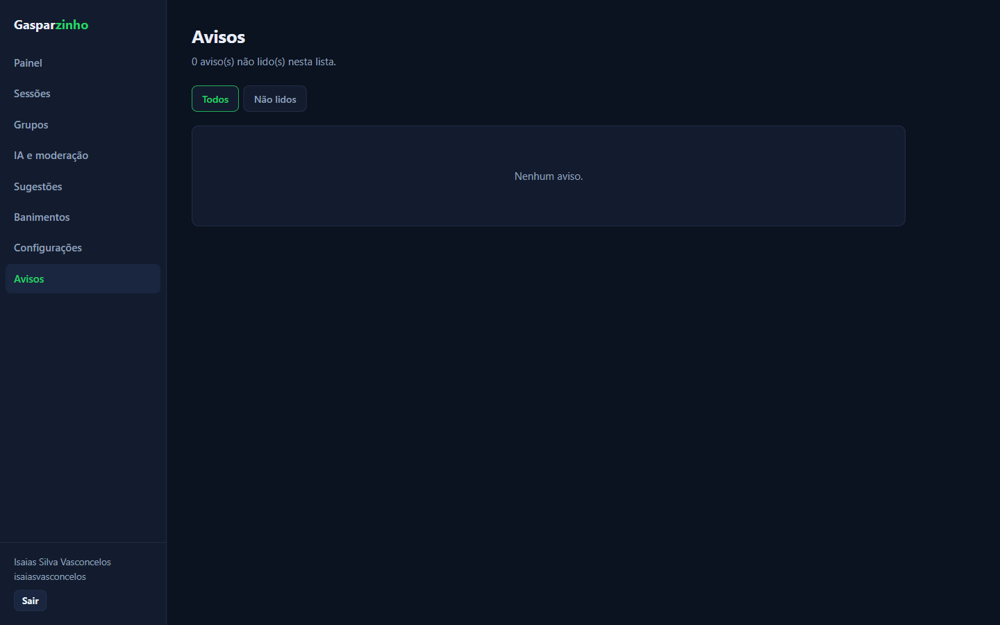
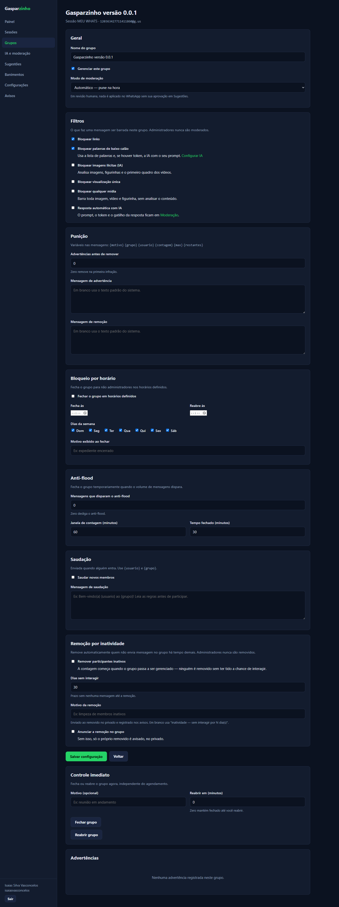

Visão completa da operação
Acompanhe sessões, grupos, sugestões pendentes, banimentos e o status da moderação em um único painel.
Centralize suas sessões do WhatsApp, automatize a moderação com IA e mantenha suas comunidades seguras, organizadas e sob controle.

Tenha as ferramentas necessárias para acompanhar e moderar seus grupos sem complicar a rotina dos administradores.
Acompanhe sessões, grupos, sugestões pendentes, banimentos e o status da moderação em um único painel.
Automatize respostas e identifique textos, imagens, figurinhas e vídeos com conteúdo inadequado.
Revise as ações sugeridas pela IA antes de aplicá-las e mantenha a decisão final sempre com você.
Explore cada área da plataforma e configure a gestão dos seus grupos de acordo com as suas regras.
O Painel centraliza os principais indicadores da sua conta, mostrando sessões e grupos gerenciados, sugestões pendentes, banimentos e o status da moderação por IA.
Crie sessões nomeadas para conectar números do WhatsApp por QR code e acompanhe, em uma única tela, o número associado, a situação da conexão e os grupos vinculados.

Visualize todos os grupos da sua sessão do WhatsApp, confira a quantidade de membros e ative a moderação nos grupos desejados. Acompanhe quais grupos já são gerenciados e quais filtros estão ativos.

Configure respostas automáticas e moderação de conteúdo para seus grupos do WhatsApp, escolhendo o provedor, o modelo, o token e os prompts que melhor atendem às suas necessidades.

Acompanhe as ações que a IA propõe para os grupos configurados no modo de revisão humana. Você mantém o controle: nada é aplicado no WhatsApp até sua aprovação.

Consulte o histórico de pessoas removidas do grupo e mantenha esses registros organizados em um só lugar.

Cadastre palavras bloqueadas e crie comandos de administrador para aplicar ações de moderação diretamente no grupo.

Centralize os avisos do sistema em uma lista organizada, com opções para visualizar todos os avisos ou apenas os que ainda não foram lidos.

Configure em um só lugar como o grupo deve ser gerenciado: defina regras de moderação, bloqueie conteúdos, personalize punições, controle horários de funcionamento e automatize ações para manter a comunidade organizada.

Escolha quando a IA deve agir sozinha e quando cada sugestão precisa passar pela sua aprovação. A plataforma se adapta à forma como você administra suas comunidades.
Entre em contato e descubra como começar a usar uma gestão mais inteligente para suas comunidades do WhatsApp.
Entre em contato para começar →